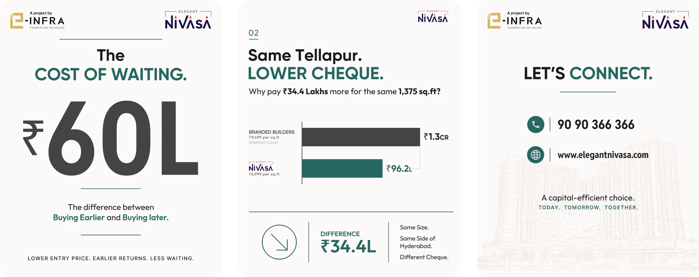
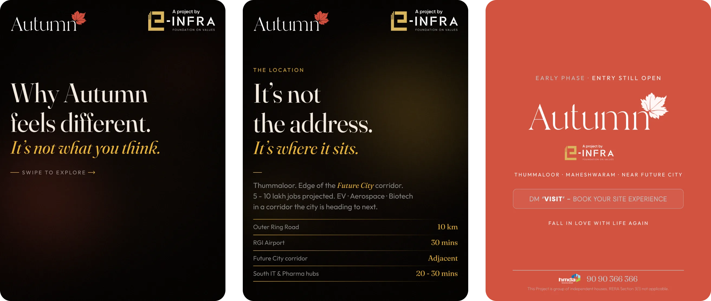
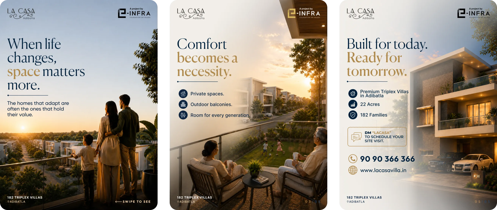
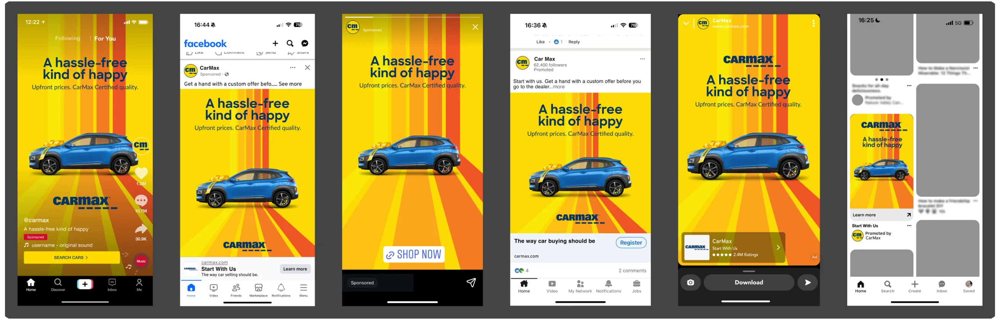
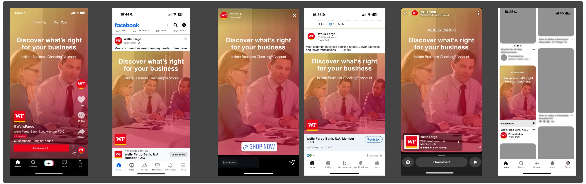
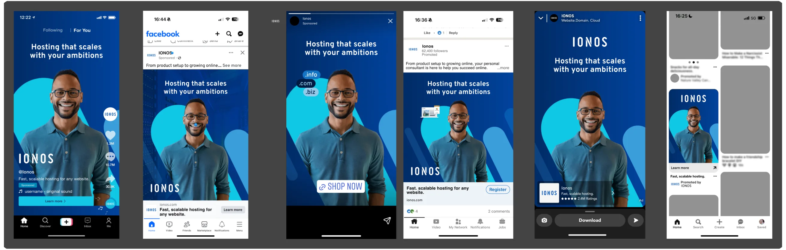
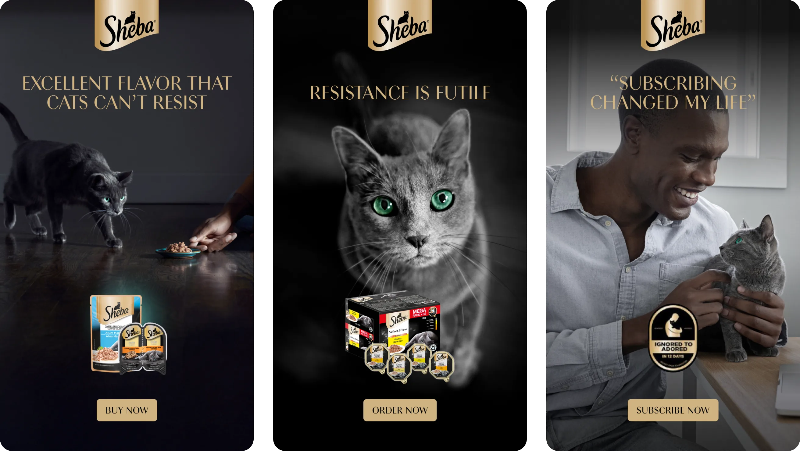

Work / Social Media
Feeds with editorial discipline.
Editorial-first social content designed as scalable systems - balancing storytelling, consistency and platform-specific performance.
CAROUSELS
Swipe-worthy sequences
Nivasa, Autumn and Lacasa - investment narratives told slide by slide.
NIVASA - “THE COST OF WAITING” · 7-SLIDE INSTAGRAM CAROUSEL · HERO

AUTUMN VILLAS - LAUNCH CAROUSEL · 6 SLIDES

LACASA - “SPACE MATTERS” CAROUSEL · 5 SLIDES

CAMPAIGN COLLECTIONS
Multi-post campaigns
CarMax, Wells Fargo and IONOS - one creative system across six placements each.
CARMAX - “A HASSLE-FREE KIND OF HAPPY” · 6 PLACEMENTS

WELLS FARGO - BUSINESS CHECKING · 6 PLACEMENTS

IONOS - HOSTING CAMPAIGN · 6 PLACEMENTS

STORY PREVIEW
Vertical-first stories
Sheba - story-format swipe ads. 9:16 moments designed for thumb-stopping speed.
